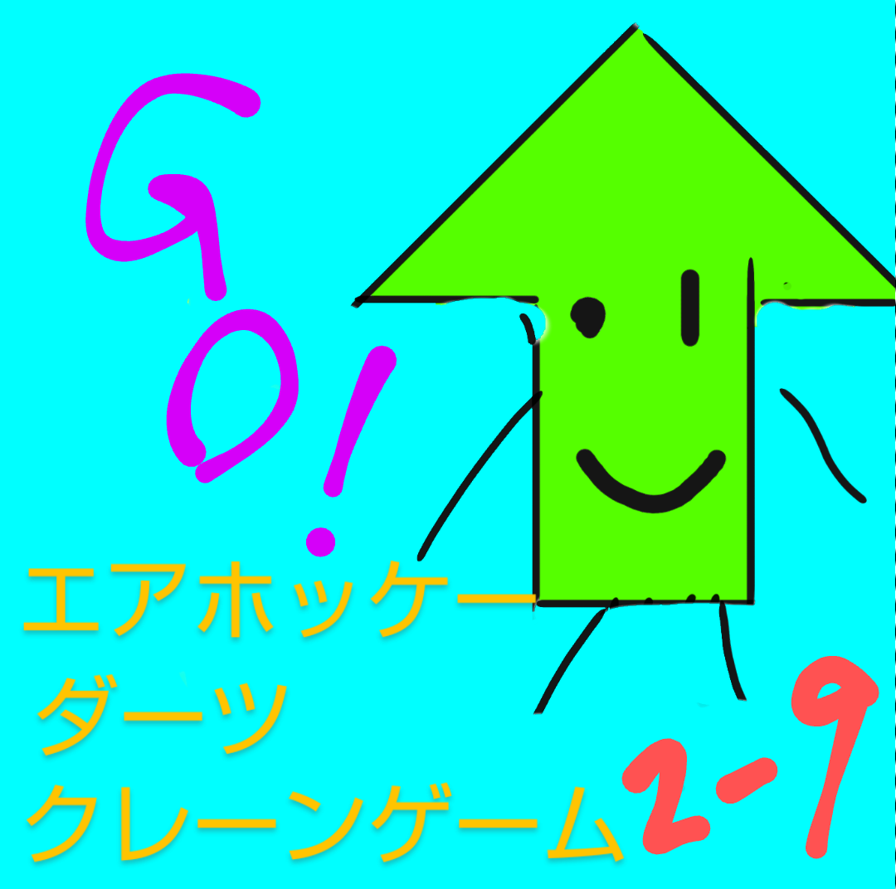
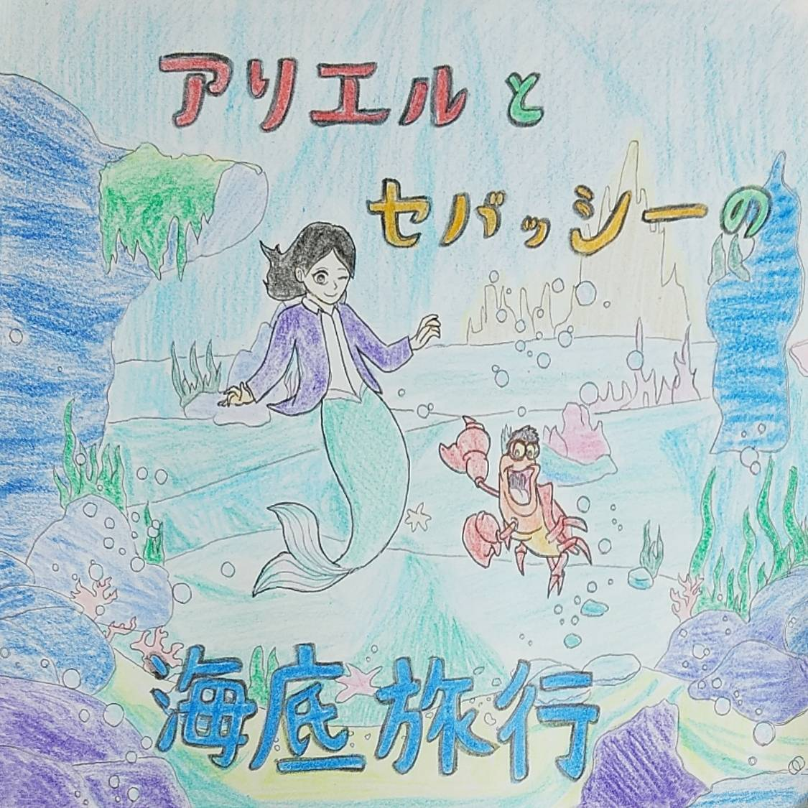
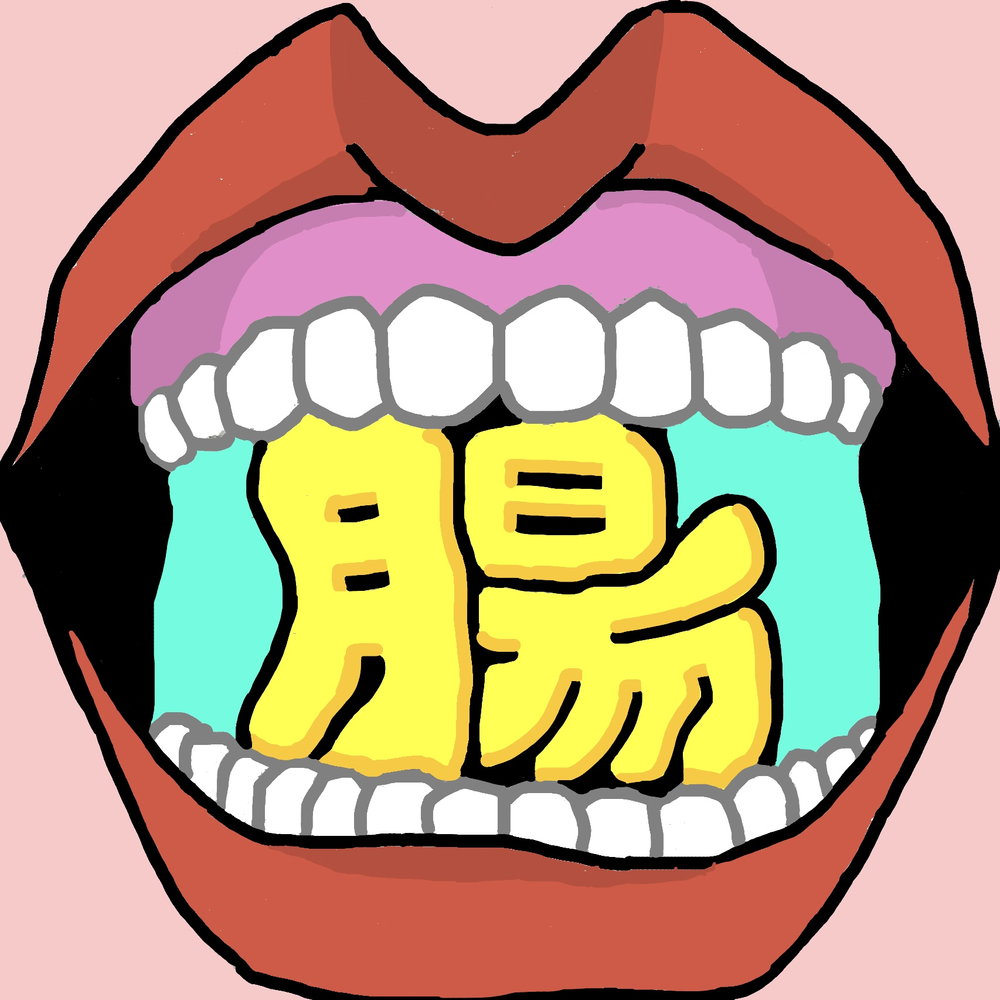
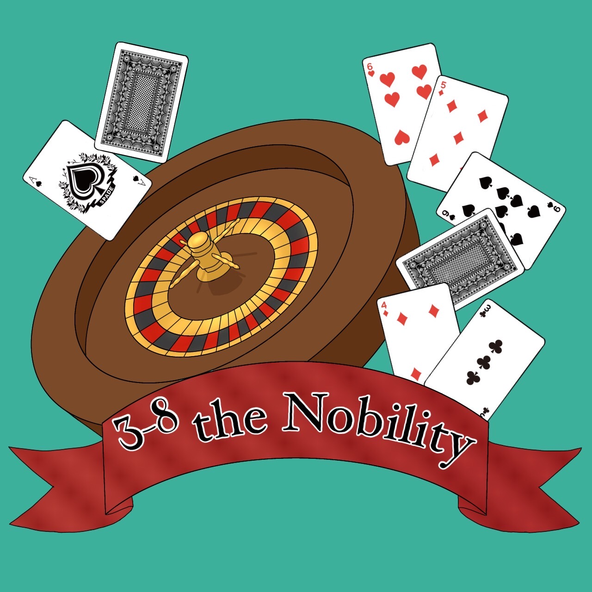
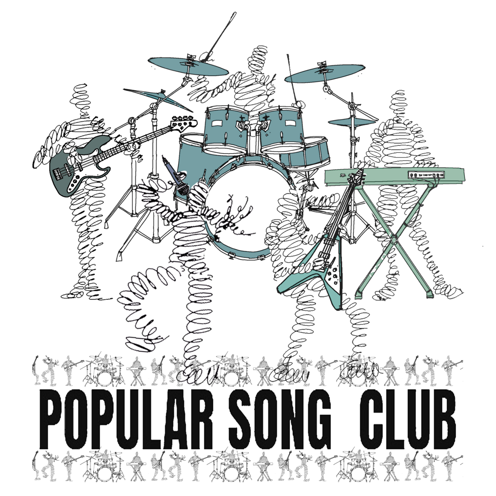
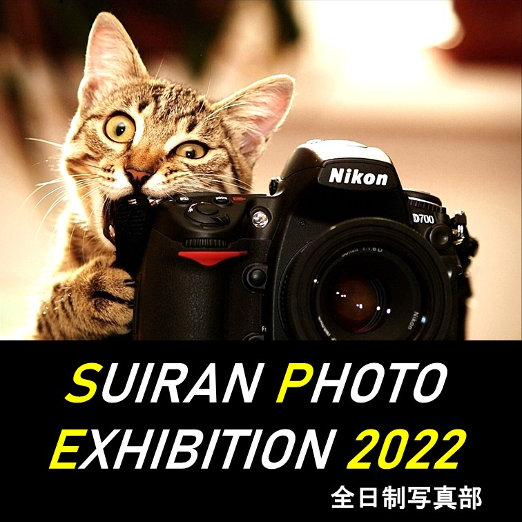

Groups
出展団体
各団体についての情報を掲載しています。
各団体紹介下部に混雑度を表示しています。
密を回避するため、空いている団体からお回りください。
-
YOSHIVEGAS
構成団体：1-1
『本場のチップ、ご用意してます』あの重量感あるチップで、ルーレット・BJ・丁半・競スマブラ(競馬)を楽しめます！試しに一度、来てみませんか？ -
絶叫病棟
構成団体：1-2
翠嵐生が人体実験を行った。実験は...失敗に終わる。実験に使われたひとの無念が君を呼び寄せた。迷いこんだ廃病院から抜け出そう！ -
suIRan thIRteen
構成団体：1-3
トランプ、サイコロや1-3自作ゲームでポイントを競うやつです。来た人の8割が依存症になっています。ぜひ来て下さい。 -

三次元間違い探し
構成団体：1-4
君はこの違和感に気づけるか？とある風景の時空が歪んでしまった！速く、多く、正確に間違いを見つけ出し、この世界の"メシア"と成り上がれ！！！ -
Escape from Suilabyrinth
構成団体：1-5
１年５組はいつも明るく、毎日笑いが絶えないクラスです！ 個性的メンバーが作り上げた、かの人気ゲームの世界から、謎解きを駆使して脱出せよ！！ -
恐怖の衰乱高校
構成団体：1-6
神奈川全域で被害者が緑色のペンキで塗りつぶされる殺人事件が起こる。そんな中、あなたに一通の電話が。あなたはこの恐怖に立ち向かえるだろうか…? -
のびる帝国
構成団体：1-7
ある日、のびる帝国がさがるくんに乗っ取られてしまった！皆で協力してポイントを集め、さがるくんを倒そう！諸君、力を貸してくれー！待っている！ -
VSi嵐
構成団体：1-8
あの伝説の番組が今日、この翠嵐の地にて復活する… 私たち1年8組は教室でVSi嵐(ブイエすいらん)を開催します！是非お立ち寄りください！ -
PRISONBREAK with IQ
構成団体：1-9
翠嵐ぐんぐんのびるくんが挫折した。挑戦者はのびるくんを挫折させた罪で監獄に入れられてしまう。目指すことはひとつだけ。謎を解き脱獄すること。 -
あやしきやしき
構成団体：2-1
古より「あやしきやしき」に一度足を踏み入れた者は二度とは出て来られないとか。日頃勉強で疲弊した翠嵐生の真の勇気をお待ちしております。 -
The Haunted Shimansion
構成団体：2-2
不気味にそびえる翠嵐に住む42人の日本史魔たちは、皆さんを43人目にしようとしています。建物を出る時、いつの間に選択している社会科目は…!? -
ヤスーミパパの作りたて(？)工房
構成団体：2-3
2-3は、シューアイスの販売をします！あの有名シュークリーム屋さんにも負けないくらいおいしいので、友達とでも1人でも、ぜひ来てください！ -
金澤ラボからの脱出
構成団体：2-4
奇妙な噂が絶えない金澤ラボ。謎を解いた先に待ち受けるDr.ミカコ、そして明かされる恐ろしい秘密。あなたはこの真実に辿り着くことができるか。 -
あなたの心にチェックメイド！
構成団体：2-5
メイドさんと一緒にミニゲームを回ろう！ミニゲームのポイントに応じてメイドが豪華に！最後にメイドさんと一緒にチェキも撮れるよ！ -
すとれすとれるっす
構成団体：2-6
ストレスがたまっている人必見！のびるくんサンドバッグを殴ったり、フォトスポットでコスプレイヤーと写真を撮ったり、鬱憤を晴らしましょう！ -
NAKATSUKU MANIA!
構成団体：2-7
あのアトラクションが翠嵐に！？ウッディの大きな口から中へ進むとおもちゃの世界が…｡ぜひ仲築間T率いる「NAKATSUKU MANIA!」へ！ -
綿貫クリニック
構成団体：2-8
お化け屋敷✖️シューティングゲーム！リア充は吊り橋効果を狙い、非リアはストレスを発散しよう！※リア充を撃つのは禁止です。 -
 甘さの消えたカスランド
構成団体：2-9
クレーンゲーム、エアホッケー、ダーツなどのアトラクションがある、ゲームセンターです！存分に楽しんでいってください！ -
 アリエルとセバッシーの海底旅行
構成団体：3-1
碧い潮が湧くように躍る海。その煌めく水面の下に、彼と彼女はのびのびと。さぁ、いらっしゃい、いらっしゃい。素敵な海底旅行を始めましょう？ -
ヒロオを含む統合型リゾート(HR)
構成団体：3-2
HRー其れはヒロオを含む統合型リゾート。ヒロキ到来やFGとの逢瀬など、Math^2進化を遂げる横浜翠嵐。今者をときめく複合施設がここにー！！ -
スーヤーマリオブラザーズ
構成団体：3-3
ピーチ姫がさらわれてしまった！隠された鍵を探し、クッパを倒してピーチ姫を助けよう！マリオの世界観満載の総合型脱出ゲームです！ -
瀬戸義隆の魔法のじゅうたん
構成団体：3-4
古びたランプから現れた魔神、瀬戸義隆。彼は翠翔祭に魔法の力(人力)を授けた…。いざ、魔法のじゅうたんに身を任せ、まだ見ぬ世界へ！ -
 翠嵐小腸.
構成団体：3-5,3-7
『翠嵐に食べられちゃった！？』翠嵐小腸が今年の翠翔祭の象徴だ！異質な迷路と翠嵐生の相性超良いはず！ゴールしてなっちゃいましょ有頂天！ -
マポッチャ
構成団体：3-6
"ひとりでもみんなでも楽しめる翠嵐のゲーセン、ここに爆誕！制限時間内にシュートを決めまくれ！フリースロー！君の狙撃の腕は如何に！？ダーツ！" -
 the Nobility
構成団体：3-8
ルーレットなど定番ゲームから、ここでしかできないオリジナルゲームまで揃えており、ポイント上位者には景品も用意しています。ぜひお越しください。 -
Nintendo 39
構成団体：3-9
私達は「Nintendo 39」と題して、シューティングゲームを実施します！懐かしのゲームの世界、ぜひお試しあれ！ -
IT研究部
構成団体：IT研究部
私たちの部活では主に部員が作ったゲームを展示します。一人でも複数人でも楽しめる作品を準備しているので、ぜひ足を運んでみてください。 -
束宝シネマ SUIRAN
構成団体：放送委員会
校内を舞台に、生徒のみならず教員までも巻き込んで制作した数々の映画を上映します。生徒、教員の普段見られないような姿をお見逃しなく！ -
翠嵐王
構成団体：クイズ研究部
「そこにボタンがあるから、私は早押しクイズをするのだ」部員とのハンデマッチで気軽にクイズが楽しめる。ボタンが光る快感を。
クイズ研究部 -
キック王に俺はなる！キッキングスナイパー
構成団体：サッカー部2年
2年サッカー部はグラウンドでキッキングスナイパーを行います。ーーーーーーーが、的は動きません。スタッフ不足です。働き方改革です。 -
Miss&Mr.翠嵐2022
構成団体：サッカー部3年
目に見えるモノが真実とは限らない。翠嵐No1は誰なのか。あの人は本当に笑点が好きなのか。真実はステージの上で。Miss&Mr.の世界へようこそ -
YSDC
構成団体：ダンス部
YSDC全学年で最高のステージを作り上げます！
ぜひ来てください！
体育館で待ってます！！ -
THE BEST SHOOTER
構成団体：バスケットボール部
Pass（合格）できてもShoot はできねぇだろう？かかってこいや翠嵐生！ -
タイセイ王子とれいぽんのシャトラックアウト
構成団体：バドミントン部
シャトル版ストラックアウトに興味はあるかい？投げたシャトルが放物線を描いて穴に吸い込まれていく快感をぜひ味わいたまえ！ -
ドキッ！？男だらけの水風船合戦
構成団体：ハンドボール部
普段はできない暴力に1番近い遊戯、それは水風船投げ。しかも相手は当てられ専門のハンドボール部員たち。ストレス発散がてらに遊びにきてみては？ -
フィールドワーク同好会
構成団体：フィールドワーク同好会
いままでの活動をまとめたものを展示しているので、ご覧ください！それをもとにしたクイズもあります。ぜひやってみてください。 -
 翠翔祭ライブ2022
構成団体：ポピュラーソング部
翠翔祭ライブを行います！！お友達が楽器持って演奏してますよ。見るしかないです！とりあえずテキサスに来ちゃいましょう！！🎶 -
隠密
構成団体：有志
文化祭の記念に写真を撮りませんか？声を掛けて頂ければ、無料で写真を撮影します。個人撮影でも、集合写真でも構いません。 -
演劇部
構成団体：演劇部
1コマ約10分のサッと観てサッと出られる演劇を上演します。完全生徒創作で翠嵐生なら爆笑間違いなし！少し足を伸ばして体育館まで来てみて下さい！ -
波打ち際の音楽会
構成団体：音楽部
J-POPやNコン曲まで、幅広い曲をお届けします。誰もが楽しめる波打ち際の音楽会、ぜひ来てください！ -
科学部
構成団体：科学部
固体・液体と変化するダイラタンシー現象の実験やピタゴラスイッチの展示など楽しめる出し物をたくさんやります。科学部でゆっくりしていきませんか？ -
棋道部
構成団体：棋道部
友人といっしょに将棋を指すのも良し、棋道部員に腕試しするのも良し、他にもボードゲーム各種あります。将棋初心者でも大歓迎。ぜひ来てください。 -
翠嵐かるた道場
構成団体：競技かるた同好会
競技かるた同好会は部員を相手に体験試合を行います！勝っても負けても豪華景品が…？ ちはやふるの世界を、是非覗きにきてください~！！ -

スイラン・フィルハーモニー・弦楽団
構成団体：弦楽部
"クラッシックからポップス…そして翠嵐生が愛してやまないあの名曲まで!?楽器紹介も!? 弦楽部59＆60期の演奏をぜひご覧ください！" -
国際交流委員会
構成団体：国際交流委員会
大使館訪問、朝鮮学校交流、姉妹校ルー高生徒の訪日、ディベート大会、定時制とのクリスマスなどの上映を行います。ぜひお立ち寄りください! -
 SUIRAN PHOTO EXHIBITION 2022
構成団体：写真部
撮影会で撮ったものを中心に、部員とっておきの写真を展示します。また、校舎工事の仮囲いには巨大作品を展示しています。ぜひお立ち寄りください！ -
書道部
構成団体：書道部
書道部では書道パフォーマンス、書道の作品展示の2つを行います。迫力のあるパフォーマンスや文芸部とのコラボ作品を披露するので是非来てください！ -
Suiran！Braban！Bigbang！
構成団体：吹奏楽部
新体制になって初めての演奏！リトルマーメイドメドレーなど明るく元気な演奏を皆さんにお届けします！是非聴きに来てください！ -
部員が足りなくてコマっちまうなぁ
構成団体：翠嵐ベーゴマの会
頭の回転と共に回したいベーゴマ、ここに爆誕 -
数学研究部
構成団体：数学研究部
どーも数研(通称陰キャの巣窟)でーす。翠翔祭では部員が講義やってるので是非来て下さい。きっと「数学の世界気持ちよすぎだろ！」と思うはずです。 -
生物部第8師団
構成団体：生物部
饅頭にハダカデバネズミとエゾユキウサギの腰は入ってないから安心してください。生物室で発表もやるよ！むしろそっちがメインだよ！来てね！ -
チャトレーゼ
構成団体：茶道部
茶道部は、どら焼き・抹茶アイス・あずきアイスの販売、お道具の展示、フォトスポットの提供を行います。どら焼きは「翠嵐」という焼き印入りです！ -
鉄道研究同好会
構成団体：鉄道研究同好会
廃部寸前の弱小部（笑）鉄道研究同好会です！今年は部員が自作したジオラマを展示します。発車ベルスイッチの体験もできるのでぜひお越しください！ -
「天文部」
構成団体：天文同好会
ソラリンへようこそ！素敵な宙の旅へお連れします。［タイプ］プラネタリウム、模型等の展示［対象］102cm以上の方［提供］TDK(天文同好会) -
すいらんびじゅつぶ
構成団体：美術部
あなたの作りたい作品が作れちゃう！ 今美術部では、レジンの制作体験や、部員の作品の展示、販売をしております。ぜひ来てみてはいかがでしょうか！ -
文芸部が無料で部誌を配布するよ
構成団体：文芸部
文芸部の部誌は俳句だけでなく短歌や小説など見所満載です！無料ですのでお気軽にお取りください。書道部とのコラボの掛け軸もぜひご覧ください！ -
まんけん2022
構成団体：漫画研究部
こんにちは漫研です！今年は部誌、アンソロ配布&キーホルダー、缶ミラーの販売を行います！翠嵐ぐんぐんのびる子ちゃんのキーホルダーもあるかも！？ -

縄跳び同好会
構成団体：陸上競技部
跳んで、跳んで、跳んで、跳んで、跳んで、跳んで、跳んで、跳んで、跳んで、回して、回して、回して、回す♪ -

定時制イラスト・写真部
構成団体：定時制イラスト・写真部
こんにちは。定時制イラスト・写真部です。今年は展示とポストカード販売をします。テーマは365日，雨，アジサイ。是非来て下さい。 -

Snack Paradise
構成団体：定時制全学年
中国・フィリピン・ネパール・タイ・ブラジルのお菓子を販売します。ぜひこの機会に!(^^)! -
定時制多文化共生研究会
構成団体：定時制多文化共生研究会
生徒のふるさとを紹介する作文や、各国の遊びの展示をしています。体育館ではタイ、ネパールのダンスの発表もあります。ぜひ遊びに来てください。